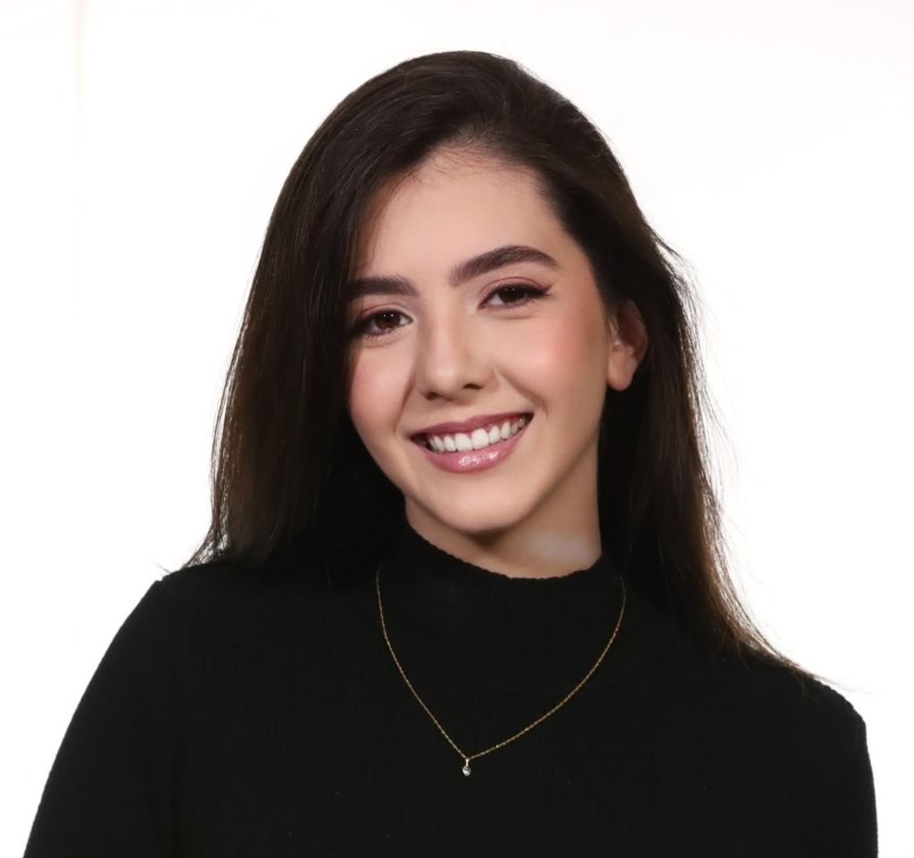
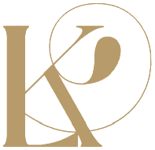
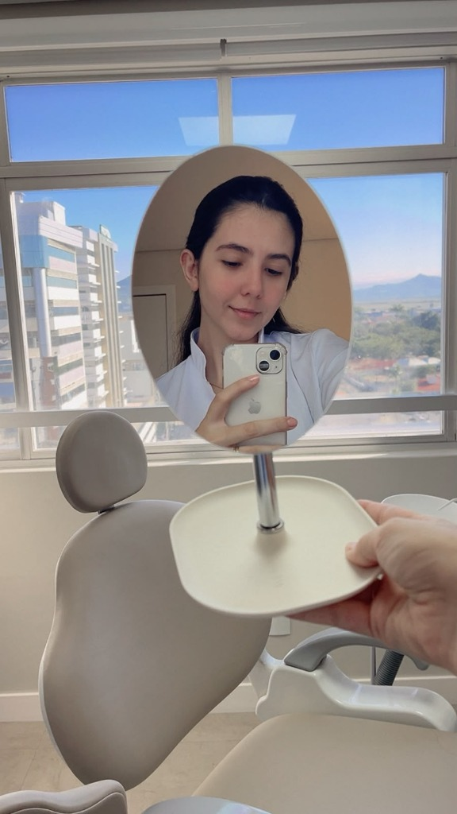
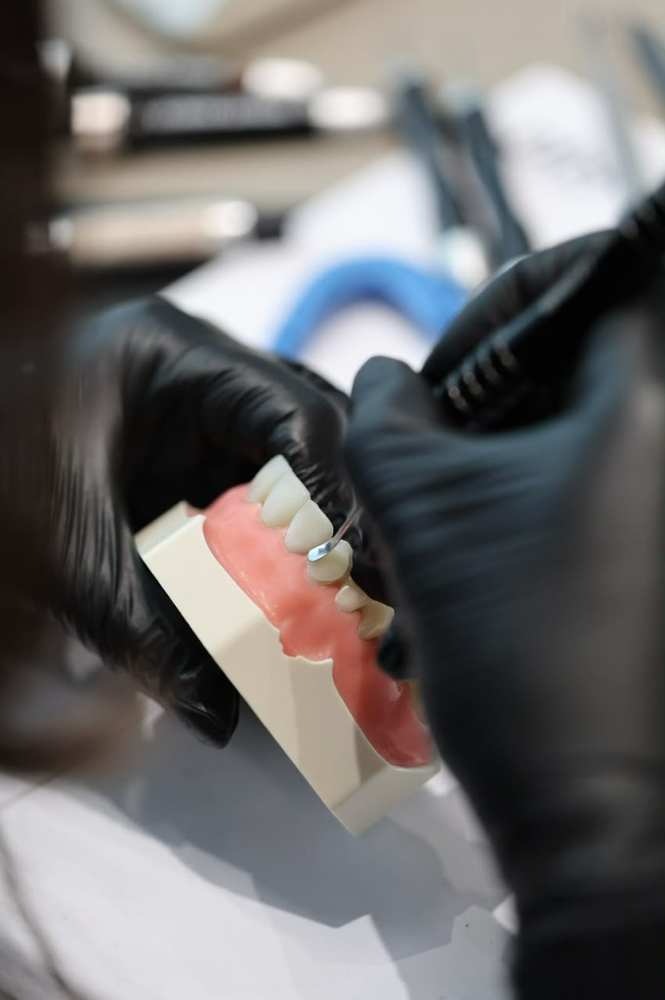
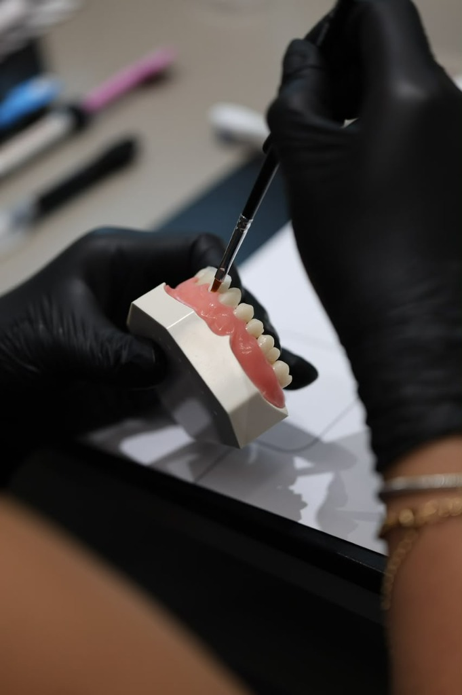
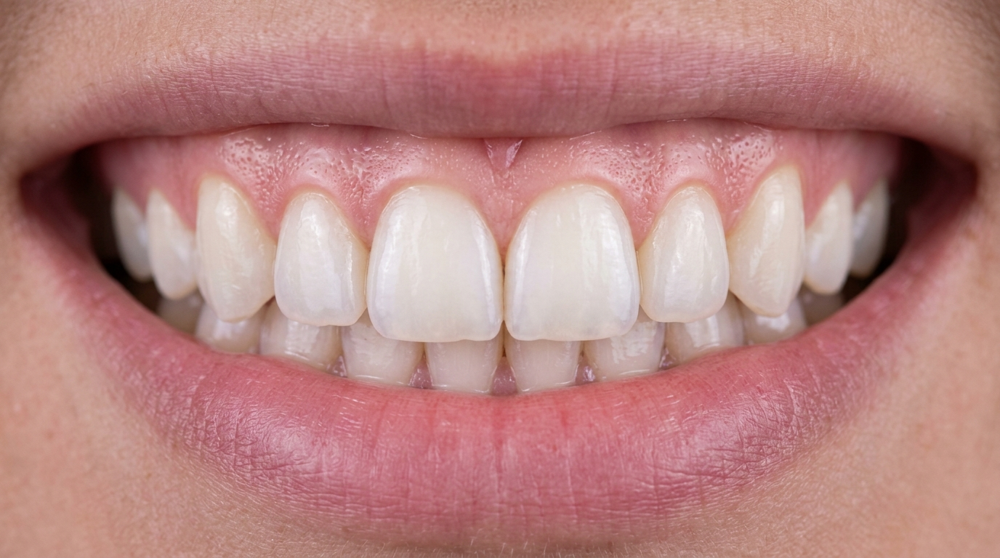
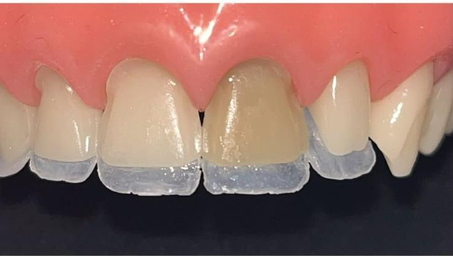
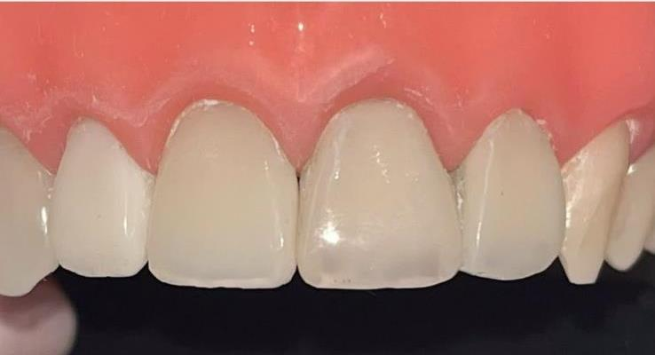

Clínica Geral & Profilaxia
Prevenção, limpeza profunda e saúde bucal integral para que seu sorriso esteja sempre forte e saudável — incluindo cirurgias e procedimentos de rotina.
Saiba maisOdontologia Estética · Tubarão, SC
Atendimento humanizado, tecnologia e estética de alto padrão em Tubarão - SC para transformar sua autoestima.


Estética naturalPrecisão em cada detalhe
Sobre a Especialista
Sou a Dra. Laura Kniess, cirurgiã-dentista apaixonada por devolver a confiança de sorrir. Acredito que a estética de verdade é aquela que ninguém percebe como “feita” — apenas como naturalmente bonita, iluminada e em plena sintonia com a sua identidade.
Cada atendimento nasce de uma escuta atenta e de um cuidado verdadeiramente humanizado: compreendo os seus desejos, avalio sua saúde bucal de forma integral e planejo cada detalhe com precisão milimétrica, unindo conforto, leveza e resultados que valorizam seus traços com naturalidade.
Conhecer especialidadesEspecialidades & Tratamentos
Da prevenção à transformação completa do sorriso, cada procedimento é personalizado para o seu rosto, sua rotina e seus objetivos.
Prevenção, limpeza profunda e saúde bucal integral para que seu sorriso esteja sempre forte e saudável — incluindo cirurgias e procedimentos de rotina.
Saiba maisDevolução da forma e da cor natural dos dentes de maneira imperceptível, com materiais de alta performance e acabamento de precisão.
Saiba maisTécnicas personalizadas e seguras para resgatar a cor natural e o brilho dos seus dentes, com conforto e sem sensibilidade excessiva.
Saiba maisTransformação estética completa de forma rápida e minimamente invasiva, esculpindo à mão o sorriso dos seus sonhos — com harmonia e naturalidade.
Saiba maisHarmonização sutil e suavização de linhas de expressão para valorizar seus traços com naturalidade, sem perder a sua expressão.
Saiba maisResultados & Laboratório
Da escolha da cor ao polimento final, cada etapa é executada com cuidado artesanal. O resultado? Sorrisos que parecem ter nascido assim.





Avaliações Reais
A maior recompensa é ver nossos pacientes sorrindo com confiança.
Perguntas Frequentes
Não encontrou o que procurava? Fale diretamente com a nossa equipe — será um prazer ajudar.
Falar no WhatsAppÉ muito simples: clique em qualquer botão “Agendar Avaliação” desta página e fale conosco pelo WhatsApp. Nossa equipe encontrará o melhor dia e horário para você.
Aceitamos Pix, dinheiro, cartões de débito e crédito, com possibilidade de parcelamento. Na avaliação, apresentamos um plano de tratamento transparente com todas as opções.
O seu conforto é prioridade. Utilizamos técnicas minimamente invasivas e anestesia sempre que necessário. Muitos procedimentos estéticos, como as lentes em resina, são realizados praticamente sem desgaste dos dentes.
Estamos no E-Clinic, Edifício Minas Center (Av. Marcolino Martins Cabral, 1788 - 11º andar - Passagem, Tubarão - SC). Um espaço moderno, acolhedor e com estacionamento e acessibilidade para o seu conforto.
Com bons hábitos de higiene e manutenções periódicas, as lentes em resina mantêm sua beleza por muitos anos. Orientamos cada paciente sobre os cuidados ideais.
Agende sua avaliação e descubra o plano ideal para você.
Agendar Avaliação